Tutorial 5: Analysis and visualization¶
Version: all versions Jacek Dziedzic; Chris-Kriton Skylaris
Introduction¶
This tutorial demonstrates how to:
- Use ONETEP to calculate various electronic properties,
- Instruct ONETEP to generate files needed for later visualization of orbitals, electronic densities and potentials,
- Visualize these properties using VMD 1,
- Set up and run a calculation on a nanostructure using a cut-off for the density kernel.
Density, spin density, Kohn-Sham orbitals and the electrostatic potential for CH3¶
In this part we will perform a calculation on the CH\(_3\) radical:
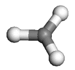
As this molecule contains an odd number of electrons we need to perform a spin-polarised (unrestricted) calculation. In ONETEP this is achieved by optimising a different density kernel \(K\) for the "up"(\(\uparrow\)) and the "down"(\(\downarrow\)) spin:
Prepreation¶
The ONETEP input for this calcualtion are:
- Tnput: methyl.dat
- Geometry (in angstroem): methyl.pdb
Note that the input file contains the coordinates as well (in atomic units), but not in a form directly
readable by visualization packages. The .pdb file can be directly visualized in VMD.
The input file specifies a single point energy calculation (TASK SINGLEPOINT) with a psinc kinetic energy cutoff of 800 eV (CUTOFF_ENERGY 800.0 eV),
the Perdew-Zunger variant of the LSDA exchange-correlation functional (XC_FUNCTIONAL CAPZ)
and the spin-polarised option (SPINPOLARIZED TRUE). Also notice the input flag DO_PROPERTIES TRUE,
which proceeds with the calculation of various electronic properties at the end of the single point
energy calculation.
Run the input, redirecting the output to a file such as methyl.out (we also provide a reference
methyl.out file).
The calculation should take a minute or two to run.
Visualisation [ionic positions]¶
Once it completes, you will notice that a number of .cube files have been created,
including the file methyl_spindensity.cube.
Let us examine this first. ONETEP can output volumetric data such as spin densities, charge densities,
potentials, etc. There are three formats to choose from:
- Gaussian
.cubeformat (CUBE_FORMAT TRUE) - Materials Studio
.grdformat (GRD_FORMAT TRUE) - OpenDX
.dxformat (DX_FORMAT TRUE).
The .cube format has the advantage of having the ionic positions output in addition to the volumetric data.
In this tutorial we will use the .cube format which can be viewed with a number of free molecular visualisation
programs. The instructions that follow are assuming that the VMD program can be used to visualize
the files but in priciple you can use any other software that can display .cube files (such as
VESTA, Molekel, gOpenMol, XCrySDens, etc).
Start VMD by typing vmd in the terminal, use File/New molecule/Browse to find
methyl_spindensity.cube, then click on Load to load the molecule. You should
be able to see a crude, line-based representation of the molecule in a separate window.
You can now get rid of the Molecule file browser window. Choosing Graphics/Representations...
opens another window which lets you control the look of your molecule. In this window,
change the Drawing Method from Lines to CPK, which will render your molecule in a
ball-and-stick fashion, with the customary colouring 2. Increase both Sphere Resolution and
Bond Resolution (30 is a good value) to get rid of the jagged edges. You may wish to
adjust Sphere Scale and Bond Radius to your liking as well.
Try dragging with your mouse over the window that shows the molecule to rotate it.
Try scrolling the mouse wheel to get closer or further away from the molecule. You may press
the = key at any time to reset the view. Pressing the T key will get you to Translate Mode,
where dragging with the mouse translates the molecule, instead of rotating it. To go back to
Rotate Mode, press R. If your mouse lacks the scroll wheel, pressing S to go to
Scale Mode might be of use. You should be able to obtain a representation similar to the one shown here.
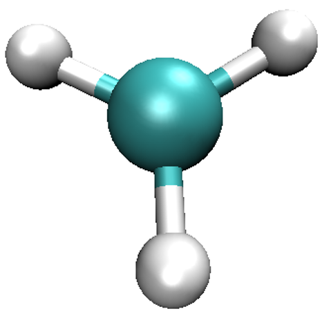
Visualisation [spin density]¶
So far we've only looked at the nuclei in the system. Let's try some electronic properties,
starting from the spin density which we have already loaded, but not visualized yet.
A neat thing about VMD is that you can use several representations at once.
Thus, we can overlay the spin density isosurfaces on top of the CPK representation of the ions.
In the Graphics/Representations... window click on Create Rep. This will clone the
CPK representation, leaving you with two identical representations. Now change one of
them to Isosurface. Not much will appear initially, because the default way of showing
the isosurface is by using points. This is computationally cheap, but visually so as well.
You can change this under Draw, by choosing Solid Surface. Before you do it,
however, make sure to move the Isovalue slider to something different than the
default 0.0 (or type a value in the box). This is because there is a huge number of
points in our system (some 400000) where the spin density is exactly or almost exactly zero
(everywhere outside our molecule). Trying to draw a surface through these points usually
confuses VMD to the point of crashing or at least stuttering. For this reason it is best to
pick any value other than the default of 0.0 to start from, before choosing Solid Surface.
Experiment with the settings (Coloring Method, Material, Isovalue) to get a feel for
how they work. It makes sense to set Coloring Method to ColorID here, as this lets us
to manually pick a colour for the isosurface (from the drop-down box near ColorID).
After some adjustments you should obtain an isosurface similar to the one shown here.
Do not worry if you cannot get the transparency right - it's only possible when you render
"production quality" images, think of what you see as a draft.
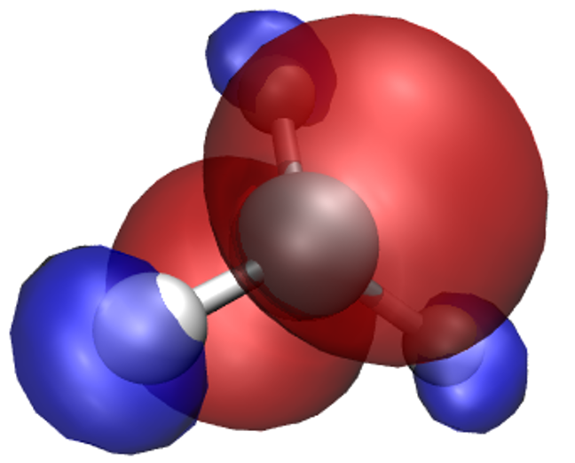
What we have obtained is the textbook picture of the spin density of a methyl radical. It has positive as well as negative regions which is a consequence of the fact that the spatial parts of the Kohn-Sham orbitals for each spin are allowed to be different, even for doubly occupied states.
Visualisation [Kohn-Sham orbtials]¶
The properties calculation also produces Kohn-Sham orbitals. Their energies for each
spin are printed in the output file (try to find them, they are towards the very end,
copy them into the table below) and .cube files for the squares of some of the
orbitals are also produced. HOMO orbitals are written, separately for each spin,
to methyl_HOMO_DN.cube and
methyl_HOMO_UP.cube, and
their LUMO counterparts to methyl_LUMO_DN.cube and
methyl_LUMO_UP.cube.
Similarly named files contain the orbitals just below the HOMO and just above the LUMO (not provided
here, but generated during the calculation).
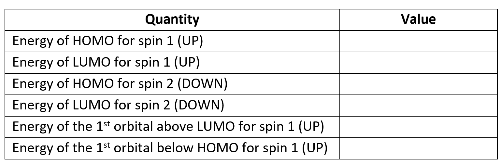
Visualisation [local potential]¶
Finally, let's try visualizing the local potential [sum of the ionic, Hartree (Coulomb) and XC potentials] with a contour plot, which is written out to methyl_potential.cube.
Isosurface plots of potentials can be obtained similarly to the isosurface plots of densities.
This can be accomplished by choosing VolumeSlice for
Drawing Method. Try playing with Slice Axis and Slice Offset to get the hang of it.
Admittedly, the quality of the contour plot is not too good, even if you set Render Quality to
High. It is improved, however, when you create a production image. Try obtaining a
composite CPK + isodensity + contour plot similar to the one shown here.
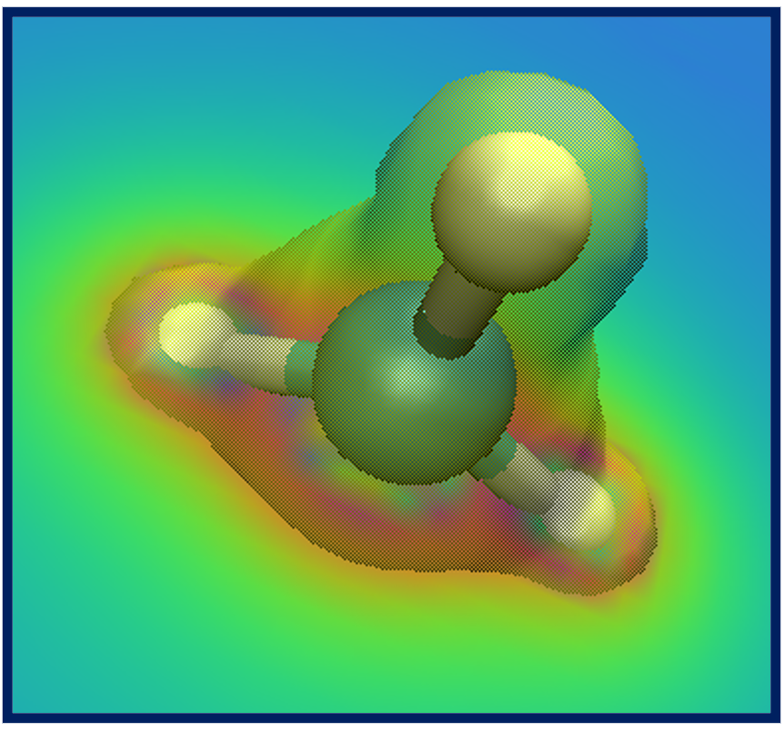
Visualising NGWFs and NNHOs for C2SiH6¶
In this example we will perform two sets of calculations on the C\(_2\)SiH\(_6\) molecule:
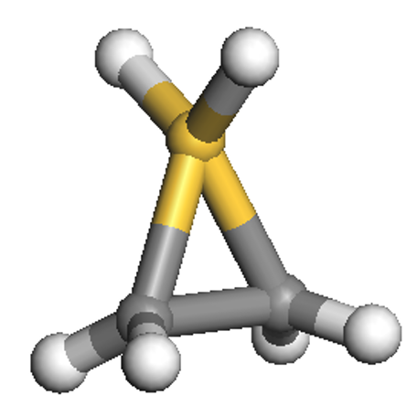
Prepreation¶
The ONETEP input for this calcualtion are:
- Input file 1: C2SiH6_NGWF.dat
- Input file 2: C2SiH6_NNHO.dat
Compared to the previous input file, the first input file has similar parameters (and, thus, keywords).
However it also contains the WRITE_NGWF_PLOT TRUE keyword that allows output of selected NGWFs in the scalarfield formats we
discussed earlier (.cube by default). The NGWFs that will be outputted are selected by the
species_ngwf_plot block in which the species of atoms whose NGWFs are to be outputted are
listed. In this example we output NGWFs of the Si atom and of the first H and C atoms (as written
in the input coordinates).
The second input file contains the additional keyword NNHO TRUE which instructs ONETEP to perform a same-centre rotation of the
NGWFs to transform them to non-orthogonal natural hybrid orbitals (NNHOs). These contain the
same information as the NGWFs but are more "natural" as they conform with chemical concepts,
such as being directed towards chemical bonds, and physical concepts, as in several of their
properties they resemble proper Wannier functions. The mixing of NGWFs to NNHOs is done according to
the procedure by Foster and Weinhold 3.
For this calculation we will use the PBE GGA exchange-correlation functional (XC_FUNCTIONAL PBE).
Visualisation [NGWF and NNHO]¶
Run the calculation to completion with the two inputs (in separate directories), it should take no more than five minutes for each of them.
Reference outputs are:
- output 1: C2SiH6_NGWF.out
- output 2: C2SiH6_NNHO.out
Examine some of the NGWF and NNHO output files. As an example, below we show plots of the third function (NGWF or NNHO) of atom 2 (one of the carbons). Try to obtain similar plots.
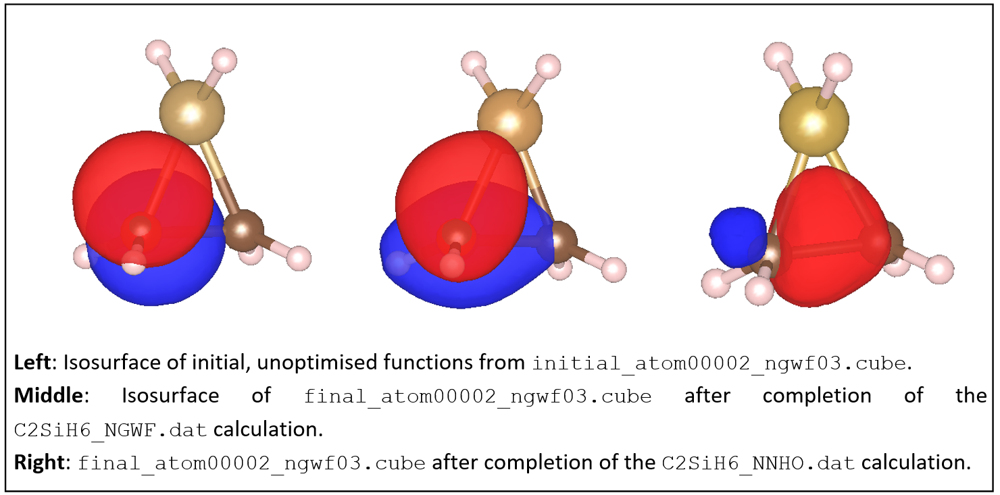
You can observe that initially the function is a p-atomic orbital (as it is initialised by ONETEP).
After the calculation the NGWF is rather distorted but still contains quite a lot of p character.
The NNHO however is a mixture of all the 4 NGWFs of the carbon atom and is optimally pointed
along the C-C bond. You can quantify these observations by comparing the two output files,
C2SiH6_NGWF.out and
C2SiH6_NNHO.out, which contain an NGWF s/p/d/f Character Analysis section
towards the bottom of the file (thanks to the NGWF_ANALYSIS TRUE keyword in the input).
You will see how much the NGWFs differ from the NNHOs. Of course all the other quantities
(energies, Kohn-Sham orbitals, orbital energies, etc.) are independent of whether you use NGWFs or NNHOs.
Check this by completing the table below.
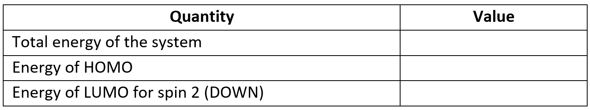
Finally, examine the atomic population in the output files (we have asked for it using the keyword
POPN_CALCULATE TRUE in the input) and confirm that the charges on each atom are consistent
with their relative electronegativities.
Nanostructure¶
Let us now see how to set up and visualize a calculation on a nanostructure whose size is in the region where conventional cubic scaling codes become very inefficient, while linear-scaling codes like ONETEP are still at the beginning of their capabilities. We will perform a calculation on the following "nano-peapod" structure, which consists of a C70 fullerene inside a single repeat-unit of a (10,8) carbon nanotube.
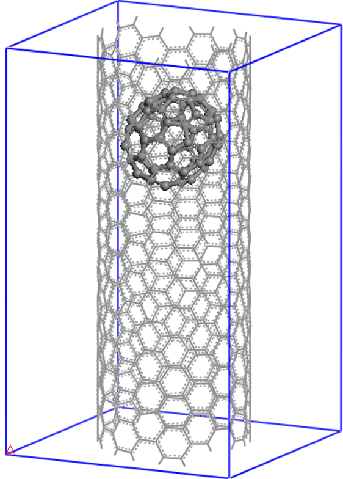
Prepreation¶
The (10,8) is a chiral nanotube with 488 atoms in each repeat-unit, so the peapod input consists of 558 atoms, with no symmetry, in a unit cell of 20.0 x 20.0 x 33.27 (angstroem), which is equivalent to 37.795 x 37.795 x 62.874 (Bohr).
The ONETEP input can be downloaded:
- Input: C70_in_10-8.dat.
Note that in this input fiel, we impose a density kernel
cut-off of 30.0 Bohr (KERNEL_CUTOFF 30.0 Bohr) in order to achieve linear-scaling behaviour.
This calculation is best run on a parallel computer, but you can run it on a desktop machine where it should complete in about two-three hours. It took just under 8 minutes when run on 5 nodes (360 CPU cores) in 2023. If you do not want to wait or do not have the sufficient resources, here's the reference output: C70_in_10-8.out.
Visualisation¶
Let us start by examining the output file. At the beginning of the calculation the filling
(the opposite of sparsity) of various matrices is reported. You will notice that the density
kernel is not 100% full as a consequence of the cut-off that is imposed in the input.
Information about the psinc grid sizes is also provided, including the actual plane-wave cut-off
to which they correspond and the size of the FFT box. The calculation converges in 7 NGWF iterations,
which is the point where the NGWF gradient threshold set in the input (NGWF_THRESHOLD_ORIG 0.00003)
has been satisfied. Normally you'd likely use a tighter threshold for extra accuracy (the default
is 2E-6).
As before, a range of properties are calculated (DO_PROPERTIES T). As an example,
you can examine the total potential (the sum of ionic, Hartree and exchange-correlation potentials)
which is outputted to the file C70_in_10-8_PROP_potential.cube. We do not provide this file
here due its size. A contour plot on a plane containing the nanotube axis of the
potential will look similar to what you see below, which is compatible with the chiral
nature of the nanotube and reveals also the asymmetric way in which the oblong C70 is
is located inside it.
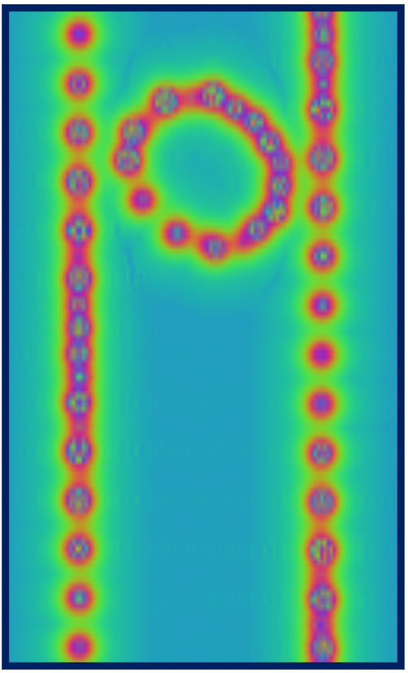
Red regions correspond to large and positive values of the potential (standard electrostatic conventions) and reveal the location of nuclei, whose distance from the plane varies along the axis of the tube, as a result of the chirality. You can go on and explore other properties of the nano-peapod from the C70_in_10-8.out file and the other output files that were produced by the properties calculation.
If you are in an ambitious mood, try creating a fancy plot showing the structure of the nano-peapod system with its HOMO and LUMO orbitals and a contour plot of the potential, similar to the one below.
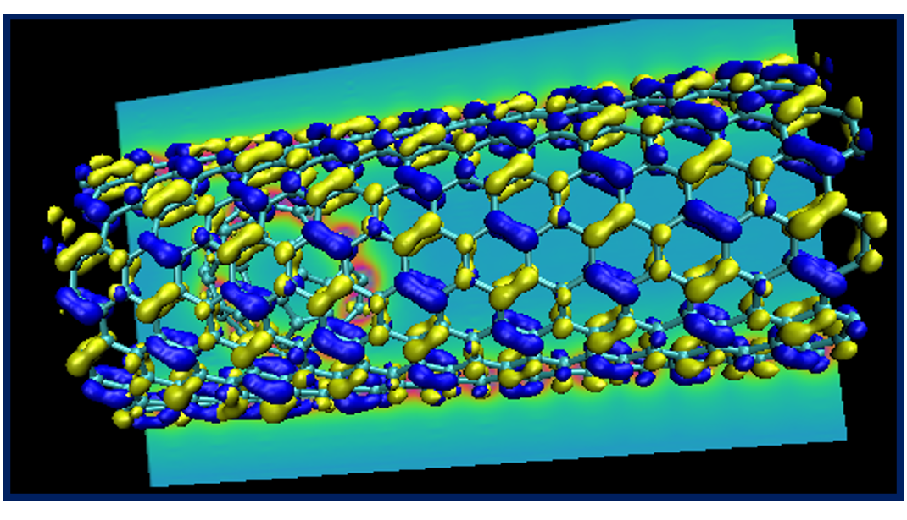
This concludes tutorial 5.